C++ has collected a small vocabulary of words that all start with const: const and const_cast from C++98, constexpr from C++11, and consteval, constinit, and is_constant_evaluated from C++20. They are easy to confuse because they read alike, but each answers a different question: is this handle read-only, and does this run at compile time or at runtime? These notes work through all of them, from const-correctness up to compile-time evaluation, drawing on a few CppCon talks.
Const, const_cast, and the const keywords
Talks & sources this draws on: 1. Back to Basics: const and constexpr in C++ - CppCon 2021 (Rest in peace Rainer) 2. Your new mental model for constexpr - CppCon 2021 3. Importance of being const - Cpp 2015 ## Const 1. Flavours of Constness in C++
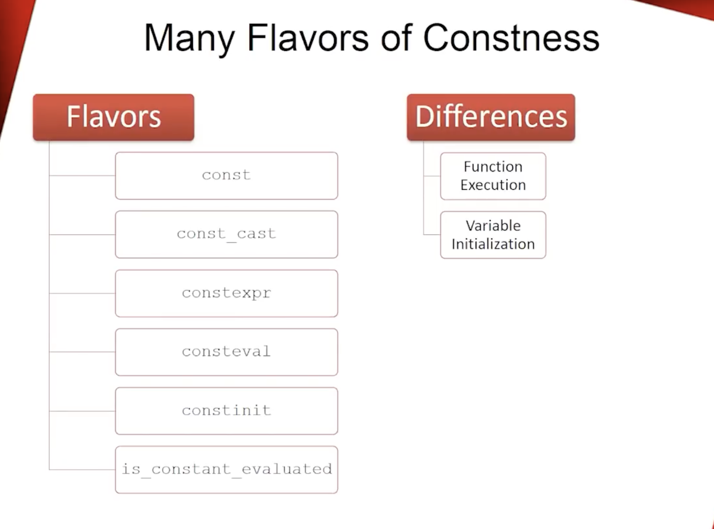
- `const`, `const_cast` -> are part of C++ 98
- `constexpr` -> C++11
- `consteval`, `constinit`, `is_constant_evaluated` -> C++20- const:
- In C++, const is a type promise: “through this handle (pointer/reference), you won’t modify the object.”
- const is a quality attribute of our program
- const objects: must be initialized, cannot be modified, cannot be victims of data racs, can only invoke const member functions
- const member functions: cannot modify any member variables (unless mutable), cannot call non-const member functions.
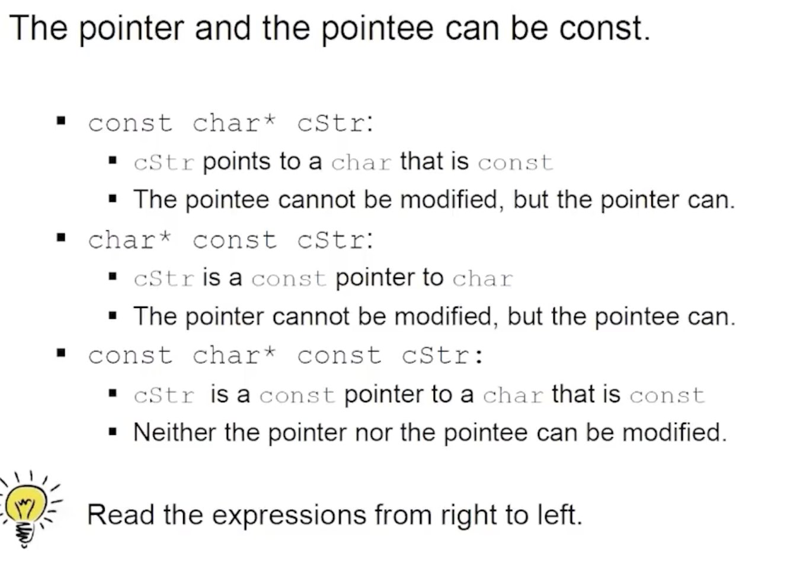
- const only changes the `this` pointer, mutable allows the modification (ignores the const on `this`)
- internally void f() const{} is treated as void f(const ClassName* this){}
- objects are data, member functions are free functions, object is passed as a hidden argument to the member function#include <iostream>
#include <mutex>
#include <thread>
#include <vector>
class ThreadSafeCounter {
mutable std::mutex m; // as it's being locked and unlocked in const member function
int counter = 0;
public:
int get() const {
std::lock_guard<std::mutex> lk(m); // RAII object, locks & unlocks mutex at construction & destruction
return counter;
}
void inc() {
std::lock_guard<std::mutex> lk(m);
++counter;
}
};
int main() {
std::vector<std::jthread> vec; // RAII object, C++20,
ThreadSafeCounter counter;
for (int i = 0; i < 20; ++i) {
vec.emplace_back([&counter] {
counter.inc();
std::cout << "counter: " << counter.get() << '\n';
counter.inc();
});
}
}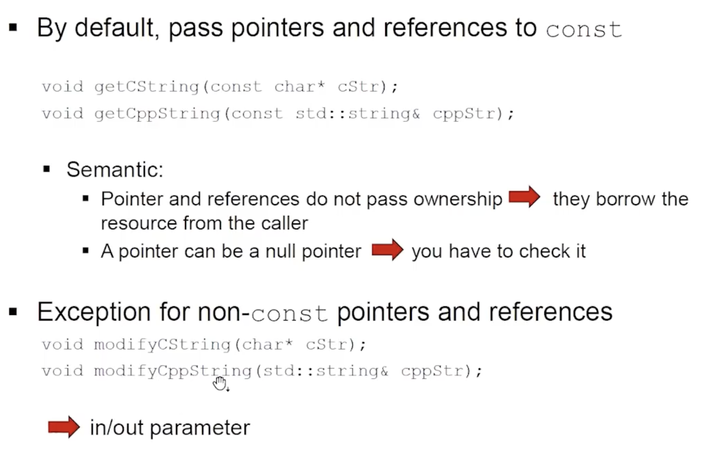
- Use const on parameters when the function doesn’t need to modify the caller’s object.
- Don’t use const when the function’s job is to modify the caller’s object (output or in/out).- “const pointer” vs “pointer to const”:
- Read from right to left.
- ` T* const p` -> const pointer to T (pointer cannot be changed)
- `const T* p` or ` T const* p` -> pointer to const T (value cannot be changed)const_cast

const int x = 5;
int* p = const_cast<int*>(&x);
*p = 7; // undefined behavior- Only when the original object is non-const, but you temporarily see it through a const view.void f(const int* p) {
int* q = const_cast<int*>(p);
*q = 10; // OK only if caller actually passed pointer to non-const int
}
int a = 1;
f(&a); // OK
const int b = 2;
f(&b); // UB inside f if it writesconst_castdemo (where it’s OK vs UB):
#include <iostream>
void safe_mutate_through_const_view(const int *p)
{
// Removing const is allowed; mutating is only defined if *p was originally non-const.
int* q = const_cast<int*>(p);
*q = 42;
}
void ub_mutate_const_object(const int* p) {
int* q = const_cast<int*>(p);
*q = 99; // undefined behavior if *p refers to a truly-const object
}
int main() {
{
int nonConstInt = 10;
const int* pToNonConstInt = &nonConstInt; // const view of a non-const object
safe_mutate_through_const_view(pToNonConstInt);
std::cout << "SAFE nonConstInt: " << nonConstInt << '\n';
}
#ifdef RUN_UB_DEMO
{
const int constInt = 10;
const int* pToConstInt = &constInt;
ub_mutate_const_object(pToConstInt); // UB: may crash, may print 10, may print 99...
std::cout << "UB constInt: " << constInt << '\n';
}
#endif
}const_cast(calling non-const vs const pointer APIs, and why C-cast is dangerous)
void func(int*) {}
void funcConst(const int*) {}
int main() {
// Invoking function taking non-const pointer with const variable
const int myInt{1988};
// func(&myInt); // ERROR: cannot convert const int* to int*
int* myIntPtr = const_cast<int*>(&myInt);
func(myIntPtr); // UB if func modifies *myIntPtr (because myInt is truly const)
// Invoking function taking const pointer with (const/non-const) pointer
const int* myConstIntPtr = const_cast<const int*>(myIntPtr);
funcConst(myConstIntPtr);
funcConst(myIntPtr);
// const_cast is safer than the C-cast
char myChar = 'A';
char* myCharPointer(&myChar);
int* intPointer = (int*)(myCharPointer); // compiles, but it's a dangerous cast
*intPointer = 'A'; // undefined behavior
// int* myIntPointer = static_cast<int*>(myCharPointer); // ERROR (good): static_cast won't do this
}- Why the slide says “don’t use C-cast”
A C-style cast (T)x is a “try a bunch of casts until something works” cast. It can silently perform combinations similar to: const_cast (remove const) static_cast (numeric/base conversions) sometimes even reinterpret_cast (bit-level reinterpretation) That makes code harder to audit: you can’t tell which dangerous conversion you just did.
constexpr
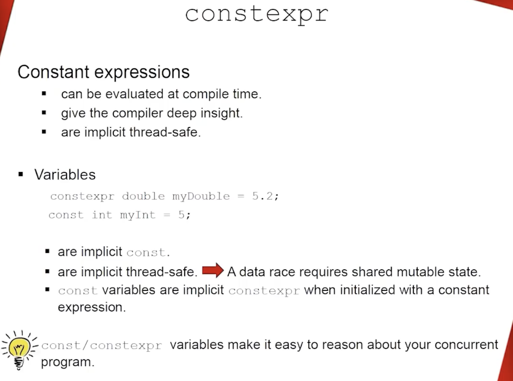
- we have two times, compile time and runtime
- 1…constexpr…M…runtime….N
- constexpr is a promise that a function or object can be evaluated at compile time
- constexpr variables are implicitly const (you can’t assign to them later)
- const means read-only through this name/type at run time: you can’t modify it via that variable.
- const does not automatically mean “compile-time”. It might be initialized from run-time work.
const int x = someRuntimeFunction(); // OK: x is const, but initialized at runtime
const int a = 5; // often compile-time usable
const int b = rand(); // NOT compile-time (run-time init)
constexpr int y = 5; // always compile-time usable
constexpr int z = rand(); // ERROR: rand() is not a constant expression- const ⇒ maybe usable as a compile-time constant, but only in certain cases (classic: const int/enum with constant initialization). For non-integral types (like double, std::string), const is not enough to make it compile-time usable; you typically need constexpr and a constexpr-capable type/initializer.

static, static_cast, thread_local (and why not in constexpr)
- What
staticmeans (C++ has multiple meanings):- Static storage duration (lifetime = whole program):
static int g;at namespace/global scope → one variable exists for entire program.static int x;inside a function → still one variable for entire program, but visible only in that function.
- Static member (belongs to the class, not each object):
struct S { static int count; };→ shared by allSobjects.
- Internal linkage (old “file-local” at namespace scope):
static int helper;→ only this translation unit can see it (today: prefer unnamed namespace).
- Static storage duration (lifetime = whole program):
static(local variable): one variable shared across all calls; lifetime = whole program.thread_local: one variable per thread; lifetime = whole thread.static_cast<T>(x): compile-time checked conversion (numbers, related pointer/class conversions). It cannot removeconst.constexprevaluation must be deterministic and cannot depend on hidden mutable state → no localstaticorthread_localinside aconstexprfunction.
Example:
constexpr int bad(int x) {
// static int s = 0; // ERROR in constexpr function (shared state across calls)
// thread_local int t = 0; // ERROR in constexpr function (depends on runtime thread)
return x;
}
int main() {
double d = 3.14;
int i = static_cast<int>(d); // OK: explicit narrowing
}- Pure functions -> functions that always produce the same output for the same input and have no side effects. Easy to test & refactor. Results can be cached (memoization) for performance.
constexpr int pure_function(int x) {
return x * x;
}
int main() {
constexpr int val = pure_function(5); // OK: evaluated at compile time
std::cout << pure_function(10) << '\n'; // OK: evaluated at runtime
}constexpr user-defined types (idea)
- If you want objects of your type to exist at compile time, construction must be possible at compile time.
- That means: provide at least one
constexprconstructor and keep it “constant-evaluation friendly”. - Member functions can be
constexpr(usable in constant evaluation) or non-constexpr(runtime-only). - Key nuance: it’s not about the object, it’s about the context.
- In a constant-expression context (
static_assert, template args, array bounds), you can only call operations valid for constant evaluation (typicallyconstexprfunctions). - The same object can still be used at runtime;
constexprdoesn’t forbid runtime calls.
Example:
struct MyDouble { double v; constexpr MyDouble(double x): v(x) {} constexpr double get() const { return v; } void print() const; };
constexpr MyDouble d(3.14);
static_assert(d.get() > 3.0); // compile-timestruct S {
int v;
constexpr S(int x) : v(x) {}
constexpr int get() const { return v; }
void print() const { /* runtime-only (e.g., std::cout) */ }
};
constexpr S s(10);
// OK: compile-time use
static_assert(s.get() == 10);
// Also OK: runtime use (even though s is constexpr)
int main() {
s.print(); // fine at runtime
int x = s.get(); // also fine
}constexpr + STL containers/algorithms (C++20)
- In C++20, many standard library operations became usable during constant evaluation (implementation support varies).
- Idea: you can build a container, run an algorithm, and return a value — and if used in a constant-expression context, it runs at compile time.
#include <algorithm>
#include <iostream>
#include <vector>
constexpr int maxElement() {
std::vector<int> myVec = {1, 2, 45, 3};
std::sort(myVec.begin(), myVec.end());
return myVec.back();
}
int main() {
constexpr int maxValue = maxElement();
std::cout << "maxValue: " << maxValue << '\n';
constexpr int maxValue2 = [] {
std::vector<int> myVec = {1, 2, 4, 3};
std::sort(myVec.begin(), myVec.end());
return myVec.back();
}();
std::cout << "maxValue2: " << maxValue2 << '\n';
}consteval (C++20)
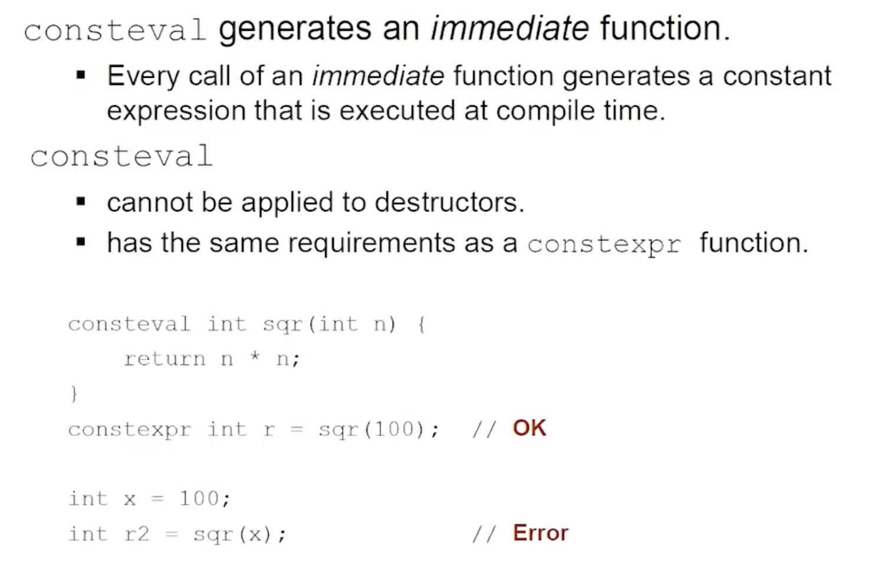
consteval= “immediate function”: must be evaluated at compile time. can be evaluated at compile time (when needed)constexpr= “can be evaluated at compile time or runtime”. Must be evaluated at compile time every time it is called- If you try to call it at runtime, you get a compile-time error.
- Use constexpr when you want “compile-time when possible, runtime otherwise.”
- Use consteval when runtime evaluation would be meaningless or dangerous.
constinit (C++20)

constinit= “constant initialization”: variable must be initialized at compile time, but can be modified at runtime.- Use
constinitfor non-const global or static variables that must be initialized at compile time (to avoid static initialization order fiasco). constinitguarantees that the variable is initialized before any dynamic initialization occurs.


- sometimes it works and sometimes it doesn’t

is_constant_evaluated (C++20)
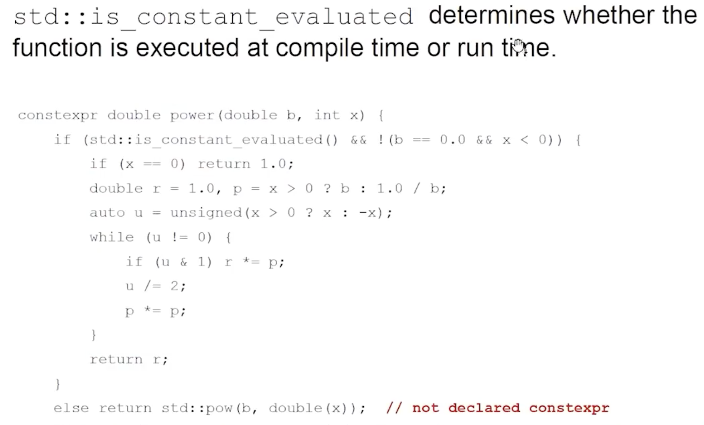
std::is_constant_evaluated()function: detects if the current evaluation context is compile-time or runtime.- Use it to write functions that behave differently depending on whether they are evaluated at compile time or runtime.
Function Execution & Variable initialization examples
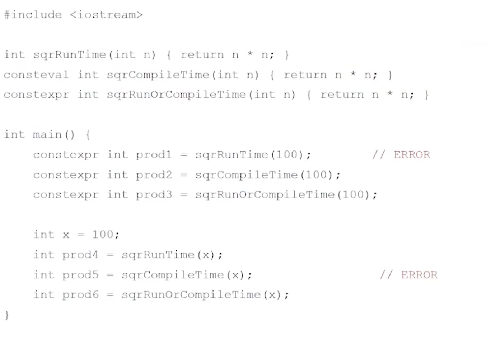
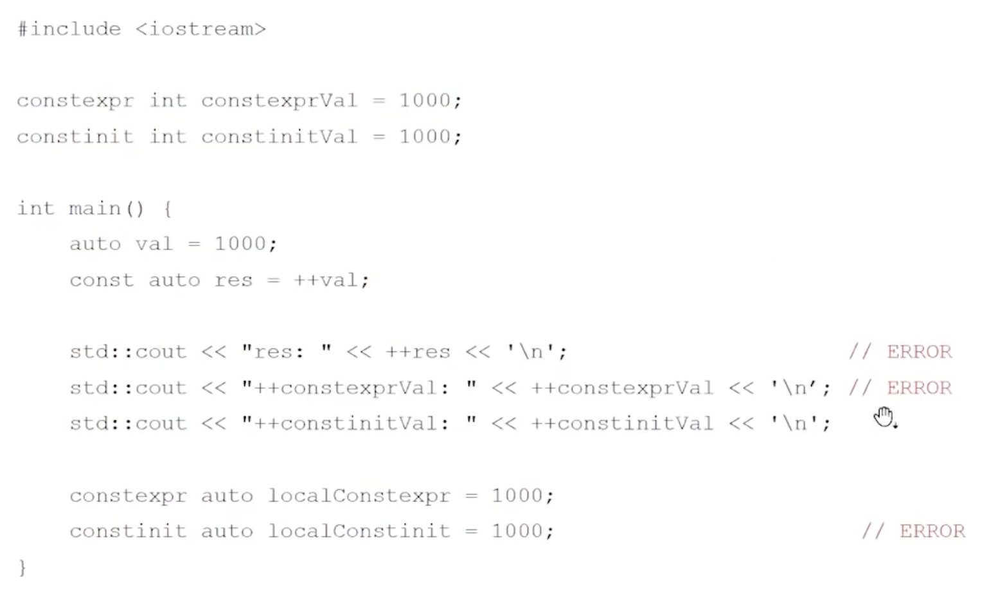
A mental model for constexpr
The single most useful reframing: constexpr is not metaprogramming. It is ordinary code that happens to run during compilation.
- What is constexpr?
- Moving computation from runtime to compile time
- constexpr is NOT metaprogramming
- Metaprogramming: programs that manipulate other programs as data
- constexpr: regular code, just executed at compile time
- What can be done at compile time?
- Anything that can be done at runtime can be done at compile time
- C++20 consteval: Turing complete at compile time
- C++11/14/17 constexpr: not Turing complete at compile time
- The constexpr continuum:
- Deciding how much work you do at compile time vs runtime
- 0% (all runtime) … constexpr … 100% (all compile time)
- Practical use cases for speed:
- Precomputed lookup tables:
- CRC32, hash functions, trigonometry tables
- Compute once at compile time, look up at runtime
constexpr std::array<uint32_t, 256> make_crc_table() { std::array<uint32_t, 256> table{}; for (uint32_t i = 0; i < 256; i++) { uint32_t crc = i; for (int j = 0; j < 8; j++) { crc = (crc >> 1) ^ ((crc & 1) ? 0xEDB88320 : 0); } table[i] = crc; } return table; } constexpr auto CRC_TABLE = make_crc_table(); - String processing:
- Convert string encodings at compile time (ASCII to PETSCII, etc.)
- Useful for embedded systems, game dev on retro hardware
constexpr auto PETSCII(const char* str) { // conversion logic } static constexpr auto greeting = PETSCII("Hello World"); - String tables:
- Store multiple strings in one contiguous memory block
- Better for cache, better for embedded systems with limited RAM
// instead of this (scattered memory) const char* s1 = "Error"; const char* s2 = "Warning"; // do this (one block, built at compile time) constexpr auto LOG_LEVELS = MAKE_STRING_TABLE("Error", "Warning", "Info"); // memory layout: "Error\0Warning\0Info\0" + index array // access: LOG_LEVELS[1] returns "Warning" - Complex math at compile time:
- Matrix operations, projection matrices for graphics
- All calculations done by compiler, executable has final values
constexpr Matrix4x4 computeProjectionMatrix(float fov, float aspect) { // trig calculations return {/* ... */}; } constexpr auto PROJ_MATRIX = computeProjectionMatrix(90.0f, 16.0f/9.0f);
- Precomputed lookup tables:
- The three keywords:
- constexpr: may evaluate at compile time
- Compiler can choose to evaluate at compile time or runtime
constexpr int factorial(int n) { return (n <= 1) ? 1 : n * factorial(n - 1); } constexpr int fact5 = factorial(5); // guaranteed compile time int x = 6; int factX = factorial(x); // runtime (x is not constexpr) - consteval (C++20): must evaluate at compile time
- Forces compile-time evaluation
- Compile error if called with runtime values
consteval int factorial(int n) { return (n <= 1) ? 1 : n * factorial(n - 1); } constexpr int x = factorial(5); // OK int n = 5; int y = factorial(n); // compile error - constinit (C++20): compile-time initialization, runtime mutability
- For globals/statics that need zero-cost initialization but can change
constinit int counter = 0; // initialized at compile time counter++; // can modify at runtime
- constexpr: may evaluate at compile time
- When compiler evaluates at compile time:
- Using in constexpr/consteval context: guaranteed compile time
- Using with static_assert: guaranteed compile time
- Using with const: maybe compile time (compiler decides)
- Using with non-const runtime variables: runtime
constexpr int factorial(int n) { return (n <= 1) ? 1 : n * factorial(n - 1); } constexpr int fact5 = factorial(5); // compile time static_assert(factorial(4) == 24); // compile time const int fact6 = factorial(6); // maybe compile time int x = 7; int factX = factorial(x); // runtime - Best practices:
When to use:
- Math constants: PI, E, conversion factors
- Lookup tables: CRC, trigonometry, color palettes
- Configuration data that doesn’t change
- Powers of 2: use bit shifts computed at compile time
constexpr int MAX_PLAYERS = 64; constexpr float PI = 3.14159265359f; constexpr int KB = 1 << 10; // instead of std::pow(2, 10) constexpr int MB = 1 << 20;Use std::array for constexpr containers:
cpp constexpr std::array<int, 5> nums = {1, 2, 3, 4, 5}; // good constexpr int nums[] = {1, 2, 3, 4, 5}; // old styleTrade-offs:
- Compilation time increases with complex constexpr
- Binary size grows (precomputed data lives in executable)
- Debugging compile-time code is harder
- Sweet spot: things that truly don’t change and are expensive to compute
- Examples of runtime speed-ups:
Color parsing in games: ```cpp // runtime: parse hex color every frame Color parseHex(const char* hex) { /* parsing */ } draw(parseHex(“#FF5733”)); // wasteful
// compile time: color ready to use constexpr auto FIRE_COLOR = parseHex(“#FF5733”); draw(FIRE_COLOR); // just loads the value ```
Configuration baking: ```cpp // runtime: parse config file at startup Config loadConfig(“settings.json”);
// compile time: config already in the binary constexpr auto CONFIG = parseConfigFile(“settings.json”); ```
Key takeaways: - Compile time = prep work, Runtime = serving results - Move expensive work to compile time if value doesn’t change - Trade-off: slower compilation for faster execution - constexpr (flexible), consteval (strict), constinit (globals) - Best for: lookup tables, math constants, string processing, config data
The importance of being const
Talks & sources this draws on: 1. Importance of being const - CppCon 2015
- Taken from google style guide
- const T t (T const t) // same thing
- const go to interview question
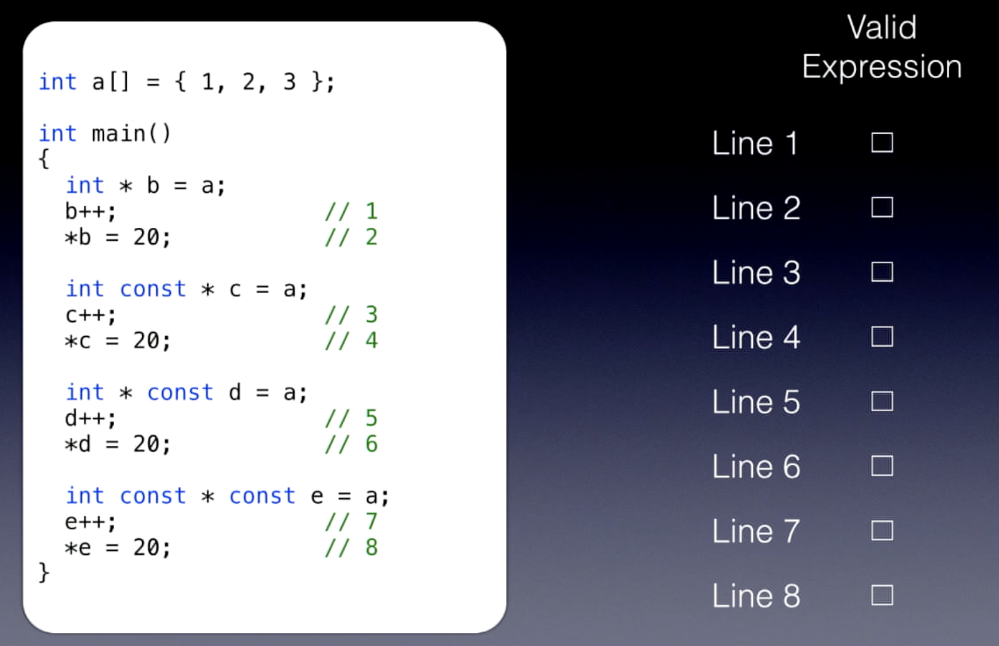
- Valid lines: 1, 2, 3, 6 (Read from right to left)- Questions on const correctness:
- Once objects are const, they stay const (except when using const_cast)
- compiler is free to add constness to objects but cannot take it away
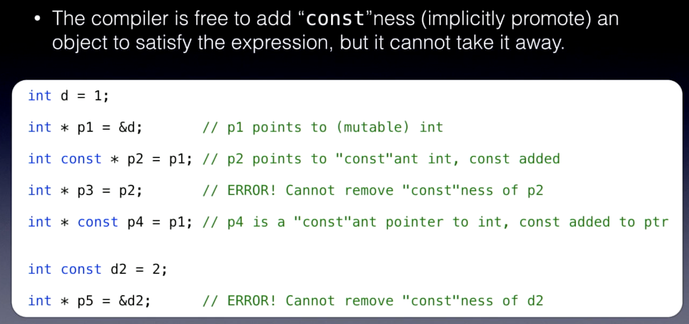
- compiler cannot remove constness, it can only add constness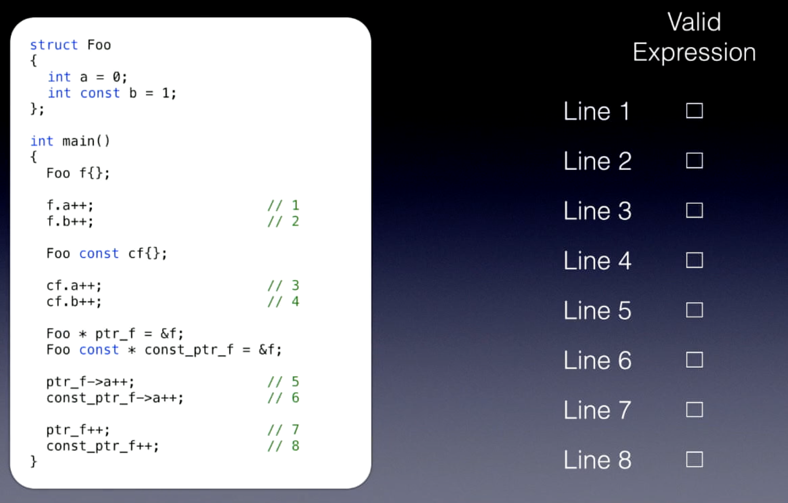
- Valid lines: 1, 5, 7, 8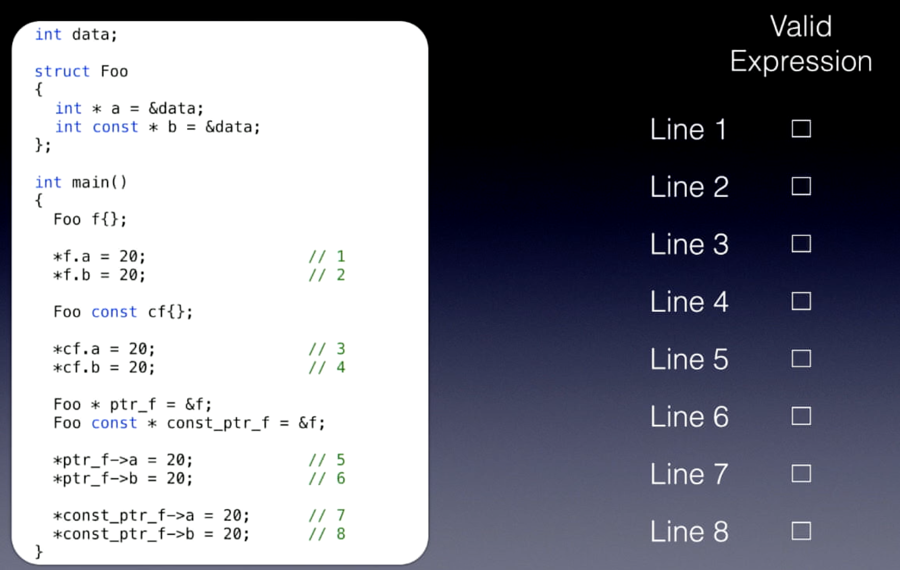
- Valid lines: 1, 3, 5, 7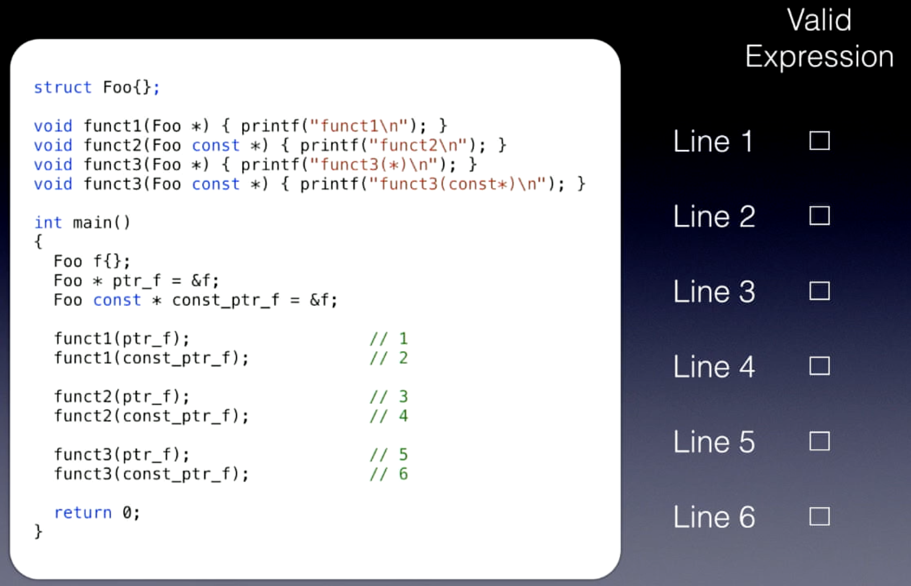
- Valid lines: 1, 3, 4, 5, 6
- Member functions can be marked const to promise not to modify the object
- ```cpp
class T{
returnValue FunctionName(args) CV-qualifiers; // CV-qualifiers: const, volatile, const volatile
};
```
- How the compiler sees them?
- Step 1: Original member function
```cpp
int Foo::GetValue() const
{
return mValue;
}
```
- Step 2: `this` pointer added as first hidden argument
```cpp
int Foo::GetValue(Foo const* const this)
{
return mValue;
}
```
- Step 3: CV qualifiers on `this` pointer
```cpp
// const member function → this is pointer to const
int Foo::GetValue(Foo const* const this)
{
return this->mValue;
}
```
- Step 4: Non-const member function for comparison
```cpp
// non-const member function → this is pointer to non-const
int Foo::GetValue(Foo* const this)
{
return this->mValue;
}
```
- Step 5: Function invocation translated
```cpp
// What you write:
Foo f;
auto v = f.GetValue();
// How compiler sees it:
Foo f;
auto v = GetValue(&f);
```
- Step 6: Name mangling (implementation-defined)
```cpp
// Compiler generates mangled name
int __ZNK3Foo8GetValueEv(Foo const* const this)
{
return this->mValue;
}
// Function call becomes:
Foo f;
auto v = __ZNK3Foo8GetValueEv(&f);
```
- Key insight: const member functions take `Foo const*`, non-const take `Foo*`
- This is why you can't call non-const methods on const objects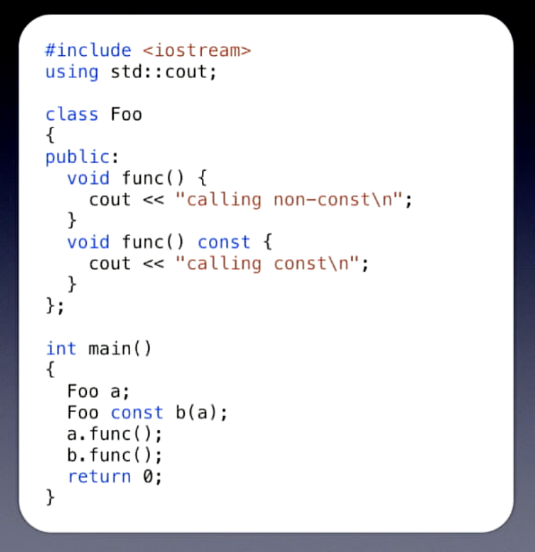
- Function overloading on const:
- Non-const object: calls non-const version (exact match)
- Const object: calls const version (can only call const methods)
- Non-const object → can call const methods (safe, adds constness)
- Const object → cannot call non-const methods (unsafe, would remove constness)
- This is why const-correctness matters: const objects are restricted to const member functions only.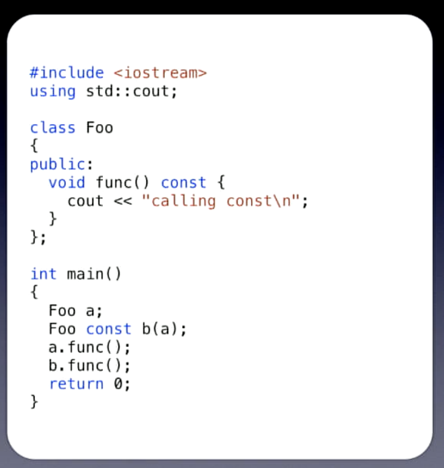